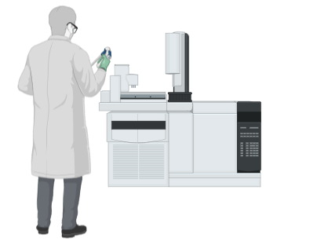
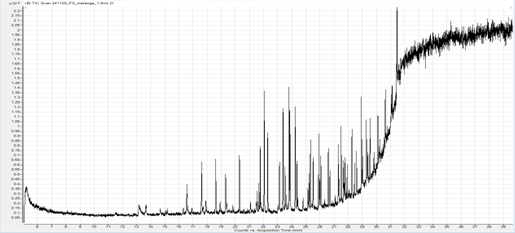
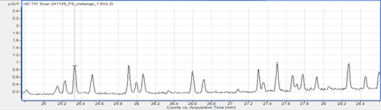
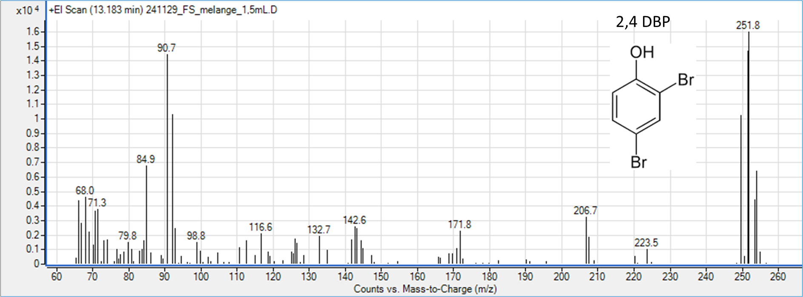

MODULE 3
Notre étude
Vous l'avez maintenant compris, les analyses en GC-MS sont très complexes et nécessitent l'adaptation très fine de nombreux paramètres.
Pour ce qui est de la séparation en Chromatographie gazeuse :
- La séparation repose sur la volatilisation des composés, et donc sur leurs températures d'ébullition respectives. A noter d'ailleurs qu'à températures d'ébullition équivalentes, certains composés sont plus compliqués Nous avons donc testé différentes températures d'injection des composés, et différentes pentes de températures durant l'analyse, permettant ainsi de chauffer progressivement, afin de laisser aux composés le temps de sortir selon leur volatilisation.
- En parallèle, nous avons optimisé la pression d'injection. Cela permet notamment d'injecter le plus de molécules possibles d'un même composé, et d'injecter très ponctuellement, pour bien séparer les pics ensuite.
- Le débit du gaz vecteur qui entraine l'échantillon dans la colonne a aussi été testé à de différentes valeurs, afin d'évaluer son influence sur la bonne séparation des composés. 
Pour ce qui est de l'optimisation de la Spectrométrie de Masse :
La vitesse et donc l'énergie des électrons en EI est conditionnée par l'énergie inculquée ainsi que par la température de la source d'électrons.
Nous avons donc testé différentes valeurs d'énergie d'ionisation et de température de source, afin d'optimiser l'identification des fragments produits.- Concernant la séparation des composés et leur identification :
- Concernant les limites de sensibilité de la méthode utilisée
- Détection des NBFR dans des échantillons environnementaux
- Après avoir testé les paramètres précédemment évoqués, nous avons pu obtenir un chromatogramme et donc une séparation satisfaisante :
Il n'est pas aussi beau que le chromatogramme d'exemple ?

Et en zoomant ? Pas mal, non ?
- Concernant l'identification des composés :
A chaque composé, et donc à chaque pic du chromatogramme est associé un spectre de masse, qui recense tous les fragments identifiés pour le composé en question :

Prenons l'exemple du spectre de masse du 2,4-DBP. Cette molécule a pour masse molaire 251,9 g/mol. Si l'on regarde le spectre de masse, le dernier fragment a une masse de 251,8, ce qui correspond à une molécule de 2,4-DBP qui est arrivée entière au détecteur. On remarque également un fragment à 171,8, soit avec une perte de 80g/mol par rapport à la molécule initiale, ce qui signifie qu'il s'agit ici d'une molécule de 2,4-DBP qui a perdu un atome de Brome, de masse molaire d'environ 80 g/mol ! Presque l'entièreté des 32 molécules d'intérêt ont pu être identifiées de la sorte, sauf les plus lourdes.
La sensibilité d'une technique est évaluée par les limites de détection et de quantification, c'est-à-dire les concentrations minimales que l'on peut avoir dans un échantillon pour détecter le polluant, et pour pouvoir le quantifier. La quantification est souvent plus fine et plus contraignante que pour une détection simple, alors la concentration limite de quantification est souvent plus élevée que celle de détection.
Dans le cadre de notre étude, nous avons obtenu des limites de détection (LOD) variables selon les composés. Elles étaient comprises entre 0,04 picogrammes/litre et 15 picogrammes/litre. Les limites de quantification étaient comprises entre 0,13 picogrammes/litre et 50 picogrammes/litre.
Sur les 35 composés à analyser, nous avons réussi à en détecter et identifier 27 ! Pas mal, non ?